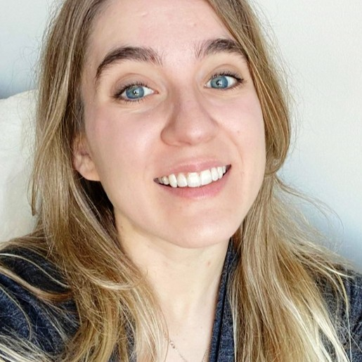

Jessica Noya

Summary
Research and Development Scientist with a Master's degree in Bioinformatics and a strong background
in cell biology and genetic research. Experienced in experimental design and data analysis.
Currently enrolled in a full-stack web development program, gaining proficieny in HTML, CSS, JavaScript,
and Node.js. Excited to leverage my analytical skills and scientific background to contribute to
the development of cutting-edge software solutions.
Education
University of Maryland Global Campus
July 2018 - December 2020
Florida Atlantic University
June 2012 - August 2015
- B.S. Neuroscience and Behavior
Work experience
R&D Scientist
GeneDx - Gaithersburg, MD
May 2022 - Current
- Leading wet-lab work for long read WGS sequencing for a cohort of 350 individuals, encompassing 120 participants from the SeqFirst WGS study at Seattle Children's Hospital.
Learn more about the collaboration
Bioinformatics Engineer
GeneDx - Gaithersburg, MD
November 2020 - May 2022
- Oversee and address issues occurring in production pipelines related to next-generation sequencing
- Proficiently retrieve QC metrics from databases as requested by the laboratory and for troubleshooting needs
- Address inquiries related to data WES and WGS
- Manage archiving processes of raw sequencing data
- Improved and manage the distribution of data to providers through AWS S3
Laboratory Supervisor, Microarray
GeneDx - Gaithersburg, MD
September 2018 - November 2020
- Efficiently managed a team of eighteen technicians, including conducting weekly laboratory meetings, overseeing scheduling, evaluating employee performance, and organizing training and team-building activities
- Tested, analyzed, and interpreted validation cases for new methods and modifications of operating procedures
- Liaised with genetic counselors for case prioritization and case management
- Identified and resolved problems affecting data quality
- Effectively troubleshooted laboratory instruments
- Oversaw timely stockpiling of laboratory inventory
Skills
- Platforms: Microarray (Agilent, Affymetrix), MLPA, qPCR, ddPCR, MCC, Long-read Sequencing (PacBio)
- Robotics: Hamilton Star, Zephyr, ABI, QIAgility, QuantStudio, Sequel IIe, Revio
- Software/Programs: GeneMapper, IGV
- Programming: Python, HTML, CSS, JavaScript, Bash
- Systems: Linux, Windows, macOS
- Version Control: Git, BitBucket, GitHub
- Database: Oracle SQL Developer, PostgreSQL